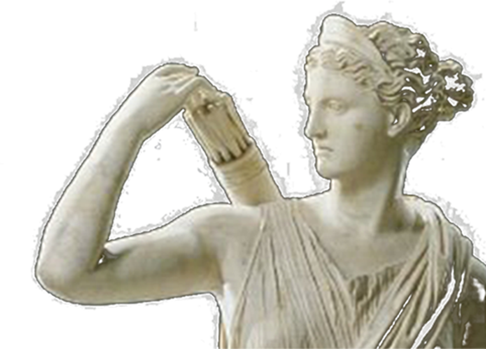
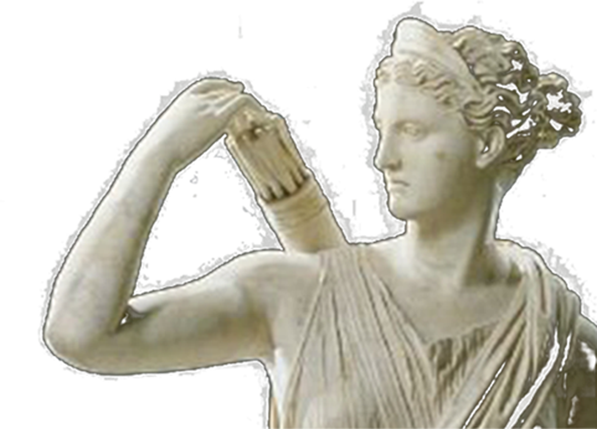

Luna
달에 홀리다

달은 지구에서 약 38만5천 km 떨어져 있는 지구의 위성이다.
하늘이 어슴푸레 졌을 때 문득 하늘을 바라보면 하얗게 떠 있는 달이 보인다. 가끔 그대로 시선을 빼앗겨, 멍하니 달을 쳐다보고는 한다.

달에는 설명할 수 없는 그만의 묘한 마력이 있다
우연히 바라본 그 순간, 우리는 달에 홀려버리고 만다
개기월식
월식은 월면 전부 또는 일부가 지구의 그림자에 가리어져서 지구에 보는 달의 밝은 부분이 일부 또는 전부가 어둡게 보이는 현상을 말한다. 지구가 달과 태양 사이에 위치할 때에 일어나는 현상으로 만월일 때에만 일어난다.

망원경과 달
갈릴레오 갈릴레이는 네덜란드에서 발명된 최초의 망원경을 개량해 천체 망원경을 개발하는 데 성공한다. 그는 망원경을 통해 달의 표면이 매끄럽지 않고 산과 분화구로 이루어져 있다는 것을 발견했다. 갈릴레이는 망원경을 통해 관찰할 달을 여러 장의 스케치로 남겨놓았다.
달착륙과 달
1969년 7월 20일 미국의 아폴로 11호가 달에 착륙했다.
이 사건은 인류가 달에 발을 디뎠다는 역사적인 사건이다. 왜 하필 달이었을까. 그저 지구와 가장 가깝다는 이유인가 아니면 밤하늘에서 밝게 빛나는 원에 홀려버려서일까?
하지만 이런 달 착륙 소식은 거짓일지도 모른다는 루머가 있었다. 성조기의 그림자의 방향, 진공상태의 우주인데 성조기가 펄럭이고 있는 모습 등을 근거로 루머가 확산되었다. 하지만 다양한 실험을 통해 그 루머는 거짓임이 밝혀졌다. 하지만 무엇이 진실이고, 거짓인지는 아무도 모른다.
 

달의 신: 셀레네와 아르테미스
본디 달의 여신은 ‘셀레네’라는 이름으로 ‘아르테미스’와는 다른 존재이다. 셀레네는 티탄족 히페리온과 테이야 사이에서 태어난 딸이다. 태양의 신 헬리오스 및 새벽의 여신 에오스와는 남매지간이다.
하지만 어느 순간 수렵, 궁술, 순결의 신인 아르테미스와 달의 여신인 셀레네를 혼동, 동일시하는 경향이 많아지고 셀레네는 신화 작가의 관심 속에서 사라져 간다. 셀레네 이외에도 숲의 신 다이애나, 마술의 신 헤카테 또한 아르테미스와 동일시 되는 경향이 있다.


늑대인간(웨어울프)
“늑대인간은 달을 보면 미친다.”라는 말이 전해져 내려온다. 늑대인간의 설화는 유럽, 특히 동유럽권에 많이 퍼져있다. 보통 보름날이 되면 늑대로 변하여 사람을 공격한다는 것이 특징이다.
늑대인간은 판타지 소설, 드라마, 영화에서 자주 쓰이는 소재이기도 하다.

구미호
동양의 전설에서 내려오는 간을 빼먹는 꼬리 아홉 개 달린 여우이다.
옛날 전설의 고향 프로그램을 보면 붉은 만월이 뜰 때 흉포하게 변하는 묘사를 볼 수 있다.
Lunatic: 미치광이
Luna는 이탈리어로 달이라는 뜻이고 Lunatic은 미치거나 정신을 놓은 사람을 이르는 말이다.
Moon: 멍하니 보내다
Moon은 동사로 멍하니 보낸다는 의미를 가지고 있다.
달은 예로부터 ‘무언가 있다’라고 여겨지는 존재였다.
그것이 길조든 망조 든 선한 것이든 사악한 것이든,
신성한 것이든, 달은 어떠한 존재였다.

보름달
한국에서 달은 원시종교에서 신앙의 대상이 되었고, 후에 달에 정령이 있다고 믿어
소원을 비는 대상이 되었다. 민속에서도 보름달은 어둠을 몰아내는 밝음과 더 좋은 세상을 기약하는 기원의 대상으로 숭상되었다.
특히, 대보름은 새해 들어 가득 찬 달을 백성들이 함께 맞이하고 ‘달맞이’, ‘달집태우기’등의 의식을 통해 공동채 의식을 일 깨웠다.
달과 월계수와 토끼
푸른 하늘 은하수 하얀 쪽배엔 계수나무 한 나무 토끼 한 마리. 우리가 익히 알고 있는 동요이다. 우리 선조는 달의 무늬를 보고 월계수와 토끼를 연상하여 달에는 토끼가 산다고 믿기도 했다. 그리고 그곳에서는 떡을 찢고 있다는 상상 또한 이루어졌다.
과거, 달에 가기를 꿈꾸던 이들,
그들이 달에 갈 수 있었던 방법은 상상이었다.
그들이 생각했던 달의 모습은 어땠을까.
Le Voyage Dans La Lune
(달세계 여행)
Le Voyage Dans La Lune는 1902년 조르주 멜리에스 감독의 흑백 무성 영화이다.
원작은 쥘 베른의 소설 <지구에서 달까지>. 감독은 이 소설을 각색해서 영화를 제작했다. 최초의 과학 영화이며, 당대의 혁신적인 특수 효과로 유명하다.
눈에 로켓이 착륙하는 장면, 즉 우주선이 달에 부딪히는(박히는) 장면이 유명한데, 스톱 모션 기법으로 만들어졌다고 알려진 영상 가운데 최초이기 때문이다. 시간이 된다면 영화를 감상해 보자.
달 토지 소유권 “루나 엠버시”
오래전 ‘UN 우주 조약’에 의해 “어떠한 정부나 기관도 달의 부동산을 소유할 수 없다.” 라고 명시되어있다. 하지만 개인이나 기업은 이곳에서 제외된다. 이를 알게 된 ‘데니스 호프’는 1980년 미국 정부와 UN에 달 소유권을 청구했고, 달 소유권을 승인받는다.
이후 그는 달나라 대사관 ‘루나엠버시(Lunar Embassy)’를 설립하고 일반인들에게 달의 땅을 분양한다. 세계 각지의 스타, 심지어 국내의 연애인 그리고 일반인들마저 달 땅을 소유하고 있다.
달에 홀려 끊임없이 달을 바라보고 그 흐름에 따라 달에 닿고, 이제는 모든 이가 달을 소유하고 그곳에 가기를 원한다.
언젠가 우리도 달에 홀려서 달 표면이 아닌,
우리가 모르는 그 어느곳으로 날아가버릴지도 모른다.